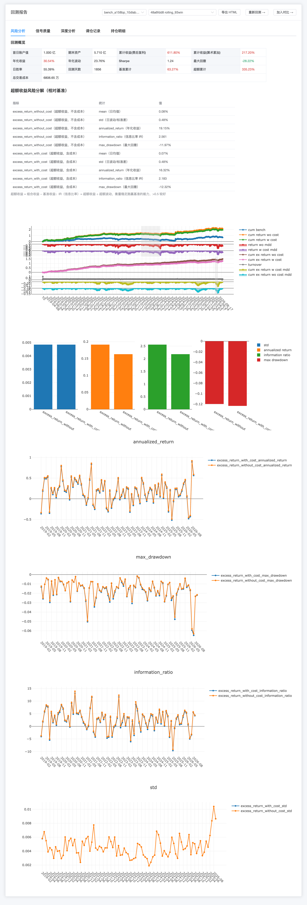

旗舰案例 · FLAGSHIP CASE · 交付方法论
AI 量化研究的验证与审计闭环
An Auditable Quant Research Workflow

问题 1原来的工作方式是什么？
这也是这套系统诞生之前、我们自己的工作方式——量化研究最常见的起点：
- 研究想法记在笔记、聊天记录和个人脚本里，想法与验证过程是断开的；
- 回测结果是一张张截图和 csv，参数版本、数据口径全靠记忆；
- 换一个数据源或参数，就要人工重跑一遍，结果是新的、过程是丢的。
三个典型症状：换人就断（只有作者本人能解释一个结论怎么来的）、出错不自查（数据口径变化静默污染历史结论）、结论无法二次核验（审计时只能重跑碰运气，没有留痕可比对）。
问题 2真正的问题在哪里？
不是「没有回测」，而是缺三样东西：统一口径、可复现执行、独立检查。每一样在我们自己的系统里都真实发生过，举三个实例：
口径：数据本身会撒谎
A股行情源断更两天，补数之后我们专门跑了一轮核验，确认补回的数据没错——这条核验过程本身成稿为一条研究线（《断更两天的行情数据补回来了，我们如何验证它没出错》）。期货方面，主力连续合约换月跳空会给趋势因子喂出假突破，管道内置了换月跳空检测。
复现：回测虚高的头号来源是前视偏差
用了未来数据的策略，收益曲线格外漂亮且难以察觉。我们的策略库里专门保留一个 lookahead_bias 反例类别，让「错误的收益长什么样」始终有对照组可看。
独立检查：既当运动员又当裁判
结论由提出者自查，等于让同一拨人负责「得出结论」和「承认错误」——这是结构性问题，靠自觉解决不了，需要把批评和裁决做成独立环节。
问题 3具体做了什么？
把研究过程本身改造成一条有留痕、有制衡、有机器防线的流水线：
五角色流水线（橙=制衡环节，绿=出口）与三道机器防线。每条研究线的完整时间线可在案例库每篇页尾查看。
- 五类人格角色互相制衡：观察员发现异动、研究经理立项、研究员工具调用取证、批评员做方法论挑刺、评审官独立复现裁决——假设证伪时，系统会自己否决自己。
- 每个环节落一条结构化留痕：作者角色、时间戳、结构化内容与引用全量入库，成稿页的时间线可以逐条展开原始 JSON。
- 成稿必须过三道机器防线（上图）：溯源覆盖率不达标自动回落确定性模板；合规词表不过不出稿；每日构建把数据库状态变成 git 提交历史，外部可验证。
问题 4如何证明它有效？
以下全部为 2026-10-16 实测，来源为留痕数据库（210 条研究线 × 全量环节）与构建日志：
- 规模：2026-08-27 起的 50 天里，210 条研究线、1,351 条环节留痕、43 个运行日（日均约 31 条）。
- 制衡真实发生：批评 158 条 + 独立评审 171 条 = 329 条，占全部留痕的 24%——批评与裁决不是装饰性环节。
- 系统会对自己的假设说不：210 条研究线中已否决 23 条、终止 52 条，合计 36%；同期对外的 6 篇成稿里，3 篇是否决 / 证伪 / 终止记录（如 加密高拥挤假设被否决、美股情绪因子证伪记录）。失败案例是交付物的一部分，不是被遮掉的部分。
- 溯源核验：6 篇成稿的数字溯源覆盖率均为 100%（合同最低线 90%），每篇页尾「交付与验证」块可查。
- 可复现实测（本次成稿时执行）：同一条研究线（T-cn-20261014-002）用模板模式连续生成两次，输出逐字节一致，SHA-256 指纹完全相同：
$ compose.py --topic T-cn-20261014-002 --mode template # 第 1 次
$ compose.py --topic T-cn-20261014-002 --mode template # 第 2 次
$ shasum -a 256 repro1/T-cn-20261014-002.md repro2/T-cn-20261014-002.md
25b9d5748548f7a4… repro1/T-cn-20261014-002.md
25b9d5748548f7a4… repro2/T-cn-20261014-002.md ← 逐字节一致
- 合规门咬过自己：2026-10-16 一次公开页构建中，词表把页面免责声明里「不提供价格点位与仓位表述」这句自我约束陈述也拦了下来，构建中止；修正扫描范围后重新发布。词表是真的在扫，git 提交历史可查。
- 成本口径：单条研究线全链路 LLM 成本约 ¥4–6，单篇成稿全链路低于 ¥20（API 计费口径）。
边界声明：本页不声称效率提升的百分比，也不涉及任何收益类指标——那需要在客户环境里做对照实验才有资格写。我们只列上面这些可以直接核验的事实。
问题 5最终交付什么？
| 交付物 | 内容 | 形态 |
|---|
| 成稿包 | 每条研究线一篇 markdown 原稿 + 自包含 HTML（正文、证据索引、过程时间线）；页尾「交付与验证」块即验收落点 | 案例库 6 篇示例 |
| 每日动态页 | 研究组织运行状态自动发布，交付期内持续可审计 | 每日研究动态 |
| 交付方法论文档 | 试点范围单（SOW）模板、成本实测与定价、部署可行性评估、演示 runbook | 面谈提供 |
| 交付工具链 | 成稿引擎等脚本（溯源核验、合规扫描、模板/LLM 双模式）——私有化评估时移交，不是黑箱 | 代码 + 文档 |
| 研究组织本身 | 五角色流水线 + 留痕数据库 + 每日构建，按托管或私有化交付 | 按项目评估 |
问题 6客户可以从哪里开始？
三种起点任选其一，都从一页初步评估意见开始（可行性 / 数据需求 / 验收标准草案）：
- 给一个数据集 → 先做数据口径体检（缺失、断更、复权、换月），出体检报告；
- 给一条现有研究流水线 → 先做复现性体检（干净环境能否重跑出同样结果），出复现差异报告；
- 给一个研究问题 → 直接跑一条完整留痕的研究线给你看，过程与结论都归你。
初步评估不需要先购买，也不需要准备完整技术方案——把问题发过来就行。